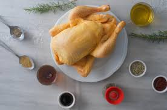

LISTAS ORDENADAS
Comidas Favoritas

- Pollo a la Brasa
- Arroz Chaufa
- Saltado de vainitas
- Tallarin rojo
- Ceviche
Bandas Musicales
- Image Dragons
- Kiss
- Neffex
- Nirvana
- Queen
- Skillet
- The Beatles
- Ver mas...
LISTAS DESORDENADAS
Ingredientes para; el Pollo a la Brasa

- Papas
- Pollo
- Romero
- Mostasa
- Sillau
- Sal
- Cervesa
- Vinagre
- Busca en intenet
LISTA DE CANTANTES
- William Luna
- Japonesa ADO
- Bryce Savage
- Paul Stanley
- Kurt Cobain
- John Lennon
- Freddie Mercury
- Ver mas...
NARANJA
- Bueno
- Alto contenido de Vitamina C y Antioxidante
- Ricas en Fibra
- Beneficios Cardiovasculares
- Malo
- Acidez Estomacal y Problemas Digestivos
- Erosión del Esmalte Dental
- Alto Contenido de Azúcar Natural (Fructosa) en Zumo
POLLO
- Bueno
- Fuente de Proteína de Alta Calidad y Baja en Grasa
- Rico en Vitaminas y Minerales Esenciales
- Versátil y Asequible
- Malo
- Riesgo de Contaminación Bacteriana
- Uso de Antibióticos y Resistencia
- Potencial Exceso de Grasa
.jpg)
{kind=link}